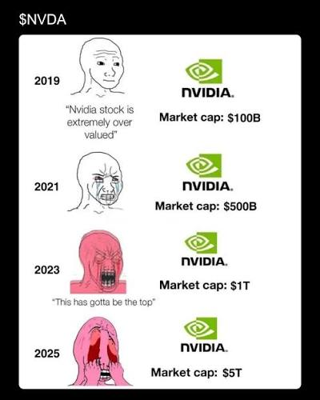

Can I code? Sure! Am I the best or most efficient? Absolutely not. But where I actually excel is in designing solutions and business facing integration. Talking to staeholders, user stories, cost analysis, proposing solutions, working with people who are actually really good at coding stuff? That's my jam. Anyway, here are some places that have jobs for solutions architects.
Axon is a public safety technology company (think tasers, body cams, dash cams, drones etc). Their solutions architects work with law enforcement agencies to rip data from their legacy systems and ingest them into Axon compatible formats for ingesting into their systems.
Central Square is also a public safety technology company but instead works on the reporting and dispatch side (although Axon is trying to get into that sector too). Central Square is primarily used as a records management suite.
Look, a guy can dream right? I just want the stock options.
